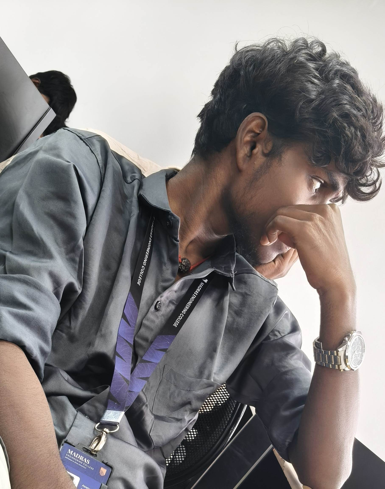

Technical leadership
Build decisions are framed around clarity, maintainability, and product impact, not just short-term output.
About The Build Style
ABISHEK.M, professionally known as AS_Edits, is presented as a high-level fullstack developer who can move across product direction, frontend systems, backend logic, and delivery strategy without losing technical depth.

system design frontend architecture backend integration Data Analyst production delivery
Positioning
ABISHEK.M is framed as someone who can lead work across the full web stack while building under the professional identity AS_Edits: translating requirements into architecture, building polished interfaces, connecting reliable services, and keeping delivery aligned with product goals.
The emphasis is on engineering maturity as much as visual quality. That means clear structure, scalable thinking, maintainable systems, strong execution speed, and a practical understanding of what it takes to ship and support real software.
Build decisions are framed around clarity, maintainability, and product impact, not just short-term output.
Frontend systems, backend services, integrations, and application flow are treated as one connected discipline.
The profile suggests someone who can move fast, solve hard problems, and still keep quality standards high.
Process
Understand product goals, technical constraints, data requirements, and the delivery risks early.
Build the interface, backend flow, and service layer as one coordinated system instead of separate pieces.
Refine performance, edge cases, maintainability, and release readiness so the product can scale with confidence.